N1 · 28 Sep 2026 · bars to 2026-09-25 (Friday's close) from the chart API cache; today's readings from the chart API's live quotes at 17:49 UTC · built 2026-09-28 18:03 UTC · research, not advice · nothing here predicts · the numbers live in data/pullback-playbook.json
/geiger rung for rung). Thirteen charts saved as images. Every average carries a 90% resampled range; "luck-proof" means the false-discovery check (10%) was passed; "not shown" means the range includes the any-day figure./allocation should use it: position caps that tighten as it rises, slower tranche pacing until a fear gauge turns, and a leader bias rather than a catch-up bet.| fund | Friday close | 252-session high | high date | sessions since | depth Friday | live today | depth live | day so far | depth vs its own days |
|---|---|---|---|---|---|---|---|---|---|
| SPY | 771.35 | 777.88 | 2026-08-13 | 30 | -0.84 | 767.34 | -1.36 | -0.52 | 67th percentile of all days' depth |
| QQQ | 744.50 | 747.46 | 2026-09-22 | 3 | -0.40 | 738.13 | -1.25 | -0.86 | 77th percentile of all days' depth |
| IWM | 281.97 | 305.09 | 2026-08-14 | 29 | -7.58 | 280.64 | -8.01 | -0.47 | 39th percentile of all days' depth |
| RSP | 211.11 | 222.77 | 2026-08-14 | 29 | -5.23 | 210.04 | -5.71 | -0.51 | 34th percentile of all days' depth |
| Leaders basket (top-20 by cap, equal weight) | 611.54 | 619.76 | 2026-09-03 | 15 | -1.33 | — | — | — | 61st percentile of all days' depth |
Depth = close ÷ the highest close of the prior 252 sessions − 1. "Live" is the chart API's last trade at 17:49 UTC; the day is not over. The leaders basket is each year's top-20 S&P names by market cap on 1 January, equal weight, from the leaders lane's FMP caps (members this year: NVDA, AAPL, GOOGL, MSFT, AMZN, META, AVGO, TSLA, BRK-B, LLY, JPM, WMT, V, ORCL, XOM, JNJ, MA, ABBV, BAC, NFLX).
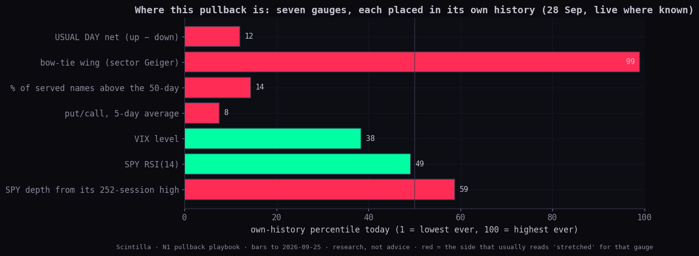
| sector (GICS) | names | % above 50-day | % above 200-day |
|---|---|---|---|
| Information Technology | 69 | 69.6% | 69.6% |
| Health Care | 22 | 54.5% | 77.3% |
| Energy | 16 | 43.8% | 75.0% |
| Materials | 31 | 38.7% | 48.4% |
| Consumer Staples | 17 | 35.3% | 47.1% |
| Communication Services | 20 | 25.0% | 50.0% |
| Industrials | 43 | 20.9% | 51.2% |
| Financials | 30 | 13.3% | 50.0% |
| Consumer Discretionary | 27 | 3.7% | 18.5% |
| Utilities | 20 | 0.0% | 0.0% |
| Real Estate | 15 | 0.0% | 26.7% |
| size (today's cap) | names | % above 50-day | % above 200-day |
|---|---|---|---|
| Mega (≥ $500bn) | 21 | 61.9% | 85.7% |
| Large ($100–500bn) | 102 | 44.1% | 66.7% |
| Mid ($10–100bn) | 160 | 25.6% | 41.3% |
| Small (< $10bn) | 27 | 18.5% | 14.8% |
Measured here from the chart API's daily bars for the Hub's served names (the candles-f5 cache, to 2026-09-25); sector and cap from data/standard-tree-20260924.json. The history behind the percentile is the same names measured backwards, so the early years overstate breadth (survivors only). The B1 whole-market table (every US common stock) sits on the candidate/breadth branch, not on live, so it is not read here. data/breadth/latest.json is the Hub's own 23 Sep reading (36.8% above the 50-day of 364 names).
| gauge | Friday | today (live) | own-history percentile | read |
|---|---|---|---|---|
| VIX | 14.87 | 15.94 | 31st Friday · 38th live (since 1990-01-02) | Friday it sat below all thirteen of its fan lines (next above: e2 at 15.06); live it is above 7 of 13 — the fast lines (e21 15.57) but not the 50-day (16.04) or the 200-day (18.05) |
| VIX ÷ 3-month VIX | 0.83 | — | 15th (regime study) | below 1 = calm; the regime study found 10.9% of days inverted since 2006, last on 2026-04-07 |
| Put/call, 5-day average (Cboe total) | 0.79 | printed after tonight's close | 8th since 2006-11-01 | last five: 0.74, 0.78, 0.86, 0.8, 0.75; its own 50th / 90th / 99th percentiles are 0.92 / 1.09 / 1.27. Statistician-2 found the 5-day put/call peak the most useful frame before shallow lows (its 90th percentile, 1.20, caught 89% of them) |
| RSI(14) · SPY | 55.9 | — | 49th all history · 41st last 3 years | mid-range |
| RSI(14) · QQQ | 64.7 | — | 76th all history · 73rd last 3 years | upper range |
| RSI(14) · IWM | 34.9 | — | 6th all history · 7th last 3 years | in its bottom tenth |
| RSI(14) · RSP | 36.1 | — | 7th all history · 7th last 3 years | in its bottom tenth |
| session | up | down | names measured |
|---|---|---|---|
| 2026-09-14 | 11 | 33 | 486 |
| 2026-09-15 | 1 | 4 | 486 |
| 2026-09-16 | 4 | 24 | 486 |
| 2026-09-17 | 17 | 3 | 486 |
| 2026-09-18 | 8 | 7 | 486 |
| 2026-09-21 | 33 | 7 | 486 |
| 2026-09-22 | 5 | 12 | 486 |
| 2026-09-23 | 0 | 25 | 486 |
| 2026-09-24 | 2 | 7 | 486 |
| 2026-09-25 | 5 | 3 | 486 |
Source: public.sigma_day_counts (one row per session since 2003-10-10, each name's close against its previous close measured against its own 60-session usual day, written by the USUAL DAY lane's backfill), read the way the Hub page reads it. Today's 0 / 20 is the live detector's count at about 13:30 ET as Alan read it; it is not a closed session and is not in the table. Recent sessions with none up and at least as many down as today: 2022-10-07 (62 down), 2022-10-14 (53 down), 2023-03-22 (37 down), 2023-08-24 (37 down), 2024-09-06 (31 down), 2026-09-23 (25 down).
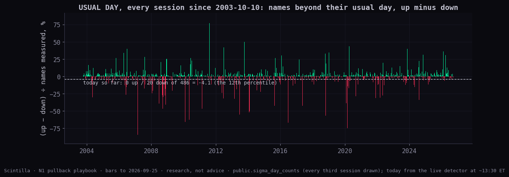
By decile of that net, SPY's next 21 and 63 sessions: decile 1 (-93.7 to -5.3): +1.6 / +3.9; decile 2 (-5.3 to -1.9): +1.6 / +3.0; decile 3 (-1.9 to -0.7): +1.4 / +3.6; decile 4 (-0.7 to 0.0): +1.4 / +3.5; decile 5 (0.0 to 0.3): +1.8 / +3.9; decile 6 (0.3 to 0.9): +1.3 / +3.4; decile 7 (0.9 to 1.6): +1.2 / +3.1; decile 8 (1.6 to 2.8): +1.2 / +3.6; decile 9 (2.8 to 5.6): +1.0 / +3.1; decile 10 (5.6 to 86.4): +1.6 / +2.9. The one-sided days (decile 1) were followed by ordinary returns; the USUAL DAY count is a description of today, not a signal on its own.
Every pullback from a closing high in the S&P 500 since 1927 (650 completed) and in SPY since 2003 (299). Read the row for the depth already reached; the current SPY pullback began 2026-08-13, reached -3.1% at its low of 2026-09-16, and reached that low above its 200-day.
| reached (closing, %) | S&P 500 episodes | median final depth | middle half | went ≥ 5 pts deeper | the low was within 1 pt | median sessions still to the low | SPY episodes | SPY median final depth | SPY went ≥ 5 deeper |
|---|---|---|---|---|---|---|---|---|---|
| 1 | 286 | 2.6 | 1.6 – 5.1 | 20% | 36% | 4 | 115 | 2.2 | 16% |
| 2 | 183 | 4.4 | 2.8 – 6.9 | 25% | 30% | 5 | 59 | 4.5 | 25% |
| 3 | 128 | 5.6 | 4.3 – 9.3 | 30% | 19% | 8 | 45 | 5.4 | 27% |
| 4 | 104 | 6.3 | 4.9 – 9.8 | 33% | 30% | 7 | 34 | 6.0 | 29% |
| 5 | 73 | 8.2 | 6.2 – 14.0 | 36% | 23% | 7 | 24 | 7.9 | 29% |
| 6 | 56 | 9.6 | 7.5 – 19.4 | 36% | 20% | 11 | 18 | 9.1 | 33% |
| 7 | 45 | 10.3 | 9.1 – 21.5 | 44% | 16% | 19 | 15 | 9.8 | 40% |
| 8 | 38 | 13.0 | 9.6 – 24.6 | 50% | 11% | 18 | 12 | 12.3 | 50% |
| 10 | 26 | 19.8 | 12.6 – 32.1 | 62% | 23% | 39 | 7 | 20.2 | 71% |
| 12 | 20 | 23.8 | 19.2 – 34.5 | 80% | 5% | 45 | 6 | 22.8 | 83% |
| 15 | 16 | 27.5 | 21.1 – 39.1 | 75% | 0% | 34 | 5 | 25.4 | 80% |
Conditioned on the market state first (rule R7): the state that matters is where price stood WHEN the depth was reached (every pullback starts above a rising 200-day, so the state at the high is no split). S&P 500: reached 3 still above the 200-day → median final 5.6, 30% went 5 deeper (n 125); reached 3 already below it → median final 5.3, 0% (n 1); reached 5 still above the 200-day → median final 8.0, 33% went 5 deeper (n 60); reached 5 already below it → median final 9.3, 42% (n 12); reached 8 still above the 200-day → median final 10.6, 31% went 5 deeper (n 13); reached 8 already below it → median final 16.6, 63% (n 24). SPY's current episode reached its low above the 200-day and sits above it now. The current episode is open and is not counted (rule R9). QQQ and the Nasdaq-100 index curves are in the JSON.
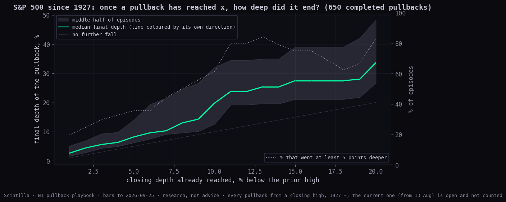
Each day since 2007-11-06 was placed on seven gauges as an own-history percentile: SPY's depth from its high, SPY's RSI, VIX, the put/call 5-day average, % above the 50-day, the bow-tie wing, and USUAL DAY's net. Today reads depth 59 · rsi 49 · vix 38 · pcc 8 · a50 14 · wing 99 · sigma 12. The nearest days (root-mean-square distance across the gauges, at least 40 sessions apart, nothing from the last 60 sessions):
| date | distance | SPY depth then | further fall within 60 | sessions to that low | SPY +21 | SPY +63 | SPY +126 | RSP − SPY, 63 | wing change, 72 |
|---|---|---|---|---|---|---|---|---|---|
| 2025-10-30 | 12.1 | -1.10 | -4.02 | 15 | +0.06 | +2.29 | +5.62 | +3.88 | -0.36 |
| 2019-06-12 | 12.5 | -1.92 | -1.58 | 37 | +4.25 | +4.11 | +8.72 | -0.43 | -0.81 |
| 2024-12-12 | 12.8 | -0.57 | -8.76 | 60 | -1.91 | -7.17 | -1.13 | +2.40 | -0.13 |
| 2015-06-19 | 13.0 | -1.26 | -11.17 | 46 | +0.45 | -7.29 | -2.82 | -0.55 | -0.70 |
| 2026-06-17 | 13.4 | -2.45 | -1.62 | 6 | +0.15 | +2.92 | — | -0.85 | — |
| 2011-06-01 | 15.9 | -3.34 | -14.87 | 47 | +0.08 | -7.73 | -8.96 | -2.43 | -0.21 |
| 2020-02-21 | 16.0 | -1.44 | -33.14 | 21 | -33.14 | -11.57 | +1.44 | -6.58 | -0.83 |
| 2017-04-21 | 16.0 | -2.16 | 0.00 | 0 | +2.10 | +5.24 | +9.04 | -1.03 | -0.66 |
| 2024-02-13 | 16.4 | -1.42 | 0.00 | 0 | +4.22 | +5.91 | +10.05 | +0.05 | -0.55 |
| 2025-03-25 | 16.5 | -6.11 | -13.72 | 10 | -5.00 | +5.50 | +14.88 | -3.44 | -0.52 |
| 2023-05-23 | 16.7 | -3.63 | -0.72 | 1 | +4.62 | +6.99 | +9.46 | -2.51 | +0.14 |
| 2013-09-12 | 17.0 | -1.17 | -2.05 | 18 | +0.78 | +5.78 | +9.30 | -0.71 | -0.05 |
| 2012-04-30 | 17.4 | -1.39 | -8.41 | 24 | -5.82 | -0.85 | +1.06 | -2.14 | -0.70 |
| 2021-08-04 | 17.6 | -0.49 | -2.36 | 42 | +3.24 | +5.22 | +4.18 | -0.51 | -0.68 |
| 2025-08-19 | 17.9 | -0.80 | -0.67 | 2 | +3.51 | +4.04 | +6.98 | -5.01 | -0.51 |
| 2013-12-12 | 18.3 | -1.80 | -2.22 | 34 | +3.11 | +4.60 | +9.07 | +1.76 | -0.34 |
| 2012-09-25 | 18.9 | -2.13 | -5.83 | 35 | -2.14 | -1.76 | +8.29 | +3.04 | -0.50 |
| 2016-10-27 | 18.9 | -2.70 | -2.17 | 6 | +3.43 | +6.75 | +11.97 | +1.62 | -0.39 |
| 2025-12-29 | 20.0 | -0.37 | -6.22 | 60 | +0.90 | -5.45 | +8.42 | +4.63 | -0.18 |
| 2021-03-02 | 20.1 | -1.55 | -2.55 | 2 | +2.53 | +8.57 | +16.99 | +2.46 | -0.67 |
| nearest K | further fall, median (10th pct) | sessions to the low | SPY +63 median | SPY +126 median (up %) | RSP − SPY 63 | wing narrowed within 72 | further fall vs all days | SPY +126 vs all days |
|---|---|---|---|---|---|---|---|---|
| 10 | -6.4 (-16.7) | 18 | +2.6 | +5.6 (67%) | -0.7 | 100% | -4.14 (90% range -9.26 to +0.67; not shown) | -0.85 (90% range -4.81 to +2.66; not shown) |
| 20 | -2.5 (-13.8) | 19.5 | +4.1 | +8.4 (84%) | -0.5 | 95% | -1.35 (90% range -4.25 to +1.26; not shown) | +1.51 (90% range -0.67 to +3.75; not shown) |
| 40 | -2.3 (-13.3) | 14 | +3.1 | +4.5 (69%) | -0.3 | 87% | -0.32 (90% range -2.12 to +1.11; not shown) | -1.22 (90% range -3.09 to +0.59; not shown) |
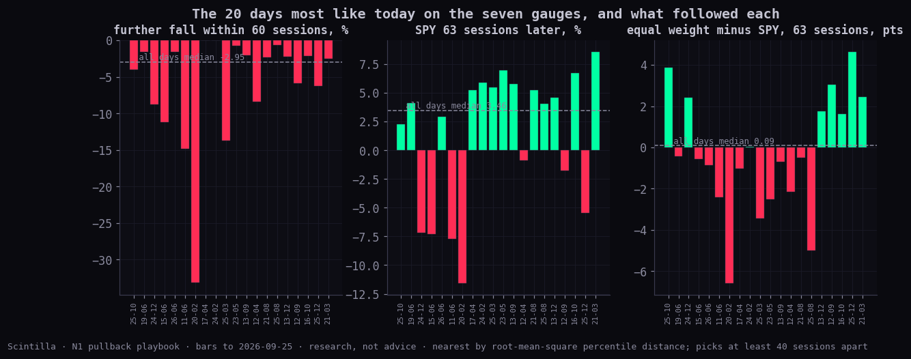
Reading: nothing in the analogs separates from any day once the ranges are drawn (the sample is 20 days, and they include 21 Feb 2020 as well as 21 Apr 2017). Two things recur: the tie narrowed, and equal weight did not catch up over the following quarter.
Is this "the one" or too early inside the yields-up / dollar-up window? Statistician-2 measured it: in the yield up · dollar up regime (both above their 200-day) SPY's typical drawdown-from-high was -3.8% against -3.0% on all days, with 43% of days 5% or more under the high against 32% — wider, but the ranges overlap (not shown). Today: 10-year 5.18% vs its 200-day 4.42%, dollar 101.04 vs 99.22. The regime says deeper pullbacks have been more common; it does not say this one has further to go.
The sector-rotation study defined the tie (the shorter of the green and red wings of the eleven SPDR sector Geigers) and found today's +0.76 the widest in the record. This section replays the same Geiger day by day (4837 sessions since 2007-07-06, weekly in the earlier study) and asks what happened next at every horizon, by decile of the wing's own percentile, and for the widest tenth against all days.
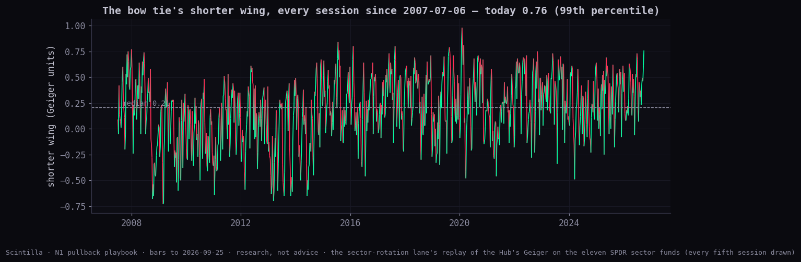
| after the widest tenth (53 starts) | 16 sessions | 38 | 72 | 126 | 252 |
|---|---|---|---|---|---|
| wing change (median; all days) | -0.30 (+0.01) · luck-proof | -0.39 (+0.02) · luck-proof | -0.38 (0.00) · luck-proof | -0.34 (+0.01) · luck-proof | -0.36 (0.00) · luck-proof |
| green wing: change of its average Geiger | -0.07 (-0.06) · not shown | -0.01 (-0.12) · not shown | -0.06 (-0.11) · not shown | -0.15 (-0.15) · not shown | -0.06 (-0.19) · not shown |
| red wing: change of its average Geiger | +0.25 (+0.25) · not shown | +0.60 (+0.40) · luck-proof | +0.58 (+0.46) · leaning | +0.49 (+0.52) · not shown | +0.67 (+0.58) · luck-proof |
| top-3 minus bottom-3 sector return, pts | -0.1 (+0.1) · not shown | -1.2 (-0.1) · not shown | +0.6 (+0.1) · not shown | +1.1 (+0.4) · not shown | +1.4 (+1.3) · not shown |
| SPY return, % | +0.2 (+1.2) · not shown | +3.4 (+2.2) · not shown | +5.0 (+4.1) · not shown | +7.0 (+6.6) · not shown | +14.1 (+13.4) · not shown |
| RSP minus SPY, pts | -0.1 (-0.1) · not shown | +0.2 (-0.1) · not shown | -0.5 (-0.2) · not shown | -1.0 (-0.5) · not shown | -2.2 (-1.1) · luck-proof |
| spread of the seven index funds' returns (IQR), pts | 1.0 (1.0) · not shown | 1.4 (1.6) · not shown | 2.3 (2.3) · not shown | 3.1 (3.2) · not shown | 4.9 (4.9) · not shown |
How far and how fast. The wing came back to its median (0.21) in a median 16 sessions from a widest-tenth start (1 start still open). Over a quarter it fell -0.38 — luck-proof, and mostly what extremes do.
Which wing. The red wing rose at every horizon (+0.60 at 38 sessions, +0.67 at a year; the 38- and 252-session figures pass the false-discovery check against all days) while the green wing's average barely moved. In Geiger terms the weak sectors stop reading weak; the strong ones keep reading strong.
What it meant for the indexes. SPY's returns after wide ties were ordinary at every horizon (not shown against all days), and the spread of the seven index funds' returns was not wider than usual. What did differ: equal weight kept losing to cap weight — -2.2 points over the following year (-2.01 (90% range -3.39 to -0.74; luck-proof)). Alan's "rebalancing by definition means mixed index performance" holds in the sense that the wings converge in Geiger terms; it does not show up as the cap-weighted index stalling while equal weight catches up. 35 comparisons were made; 8 survive the false-discovery check (the wing changes, two red-wing changes, and the one-year equal-vs-cap figure).
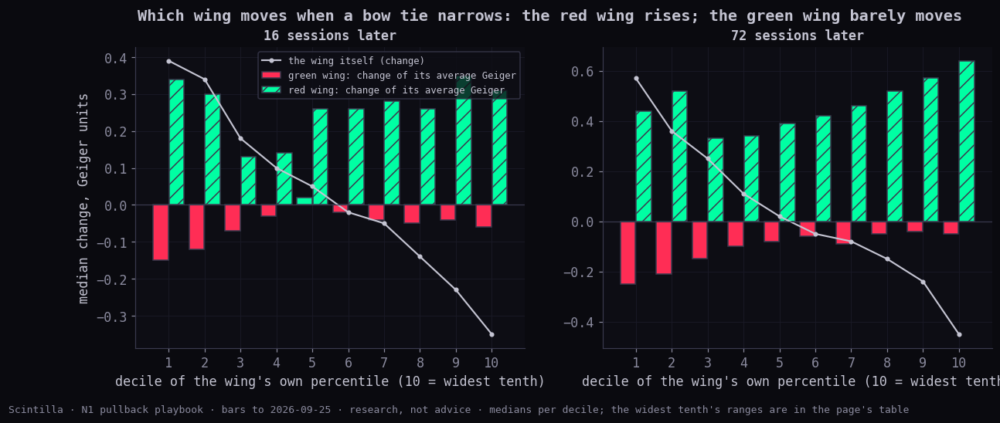
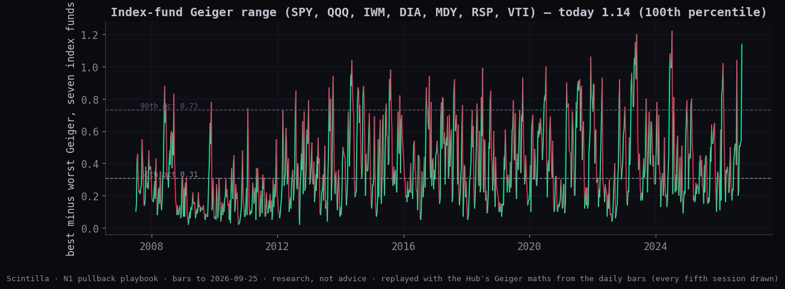
By decile of the range, SPY's next quarter and RSP − SPY: 1: +3.9 / +1.0; 2: +3.9 / +0.6; 3: +2.8 / -0.1; 4: +3.4 / -0.1; 5: +3.7 / -0.3; 6: +3.2 / -0.3; 7: +3.8 / -0.6; 8: +3.8 / -0.4; 9: +4.1 / -0.5; 10: +4.5 / -0.3. The wider the range between the index funds, the more equal weight went on trailing over the next quarter (deciles 3–10 negative). A Geiger tab for the index funds that shows each fund's percentile and this range is a small build (the replay is research/statistics/sector-rotation/lib.mjs); proposed below.
NARROW = the mean of six own-history percentiles, each read so that higher = narrower: (1) bow-tie wing (own percentile); (2) equal ÷ cap weight, 63-session change (inverted: low = narrow); (3) % of served names above their 50-day (inverted); (4) index-fund Geiger range (own percentile); (5) QQQE ÷ QQQ 63-session change (inverted, from 2012); (6) EQAL ÷ IWB 63-session change (inverted, from 2015). A reading needs at least three of the six. Today: (1) 99, (2) 96, (3) 85, (4) 100, (5) 80, (6) — → 92, the 100th percentile since 2008-07-03.
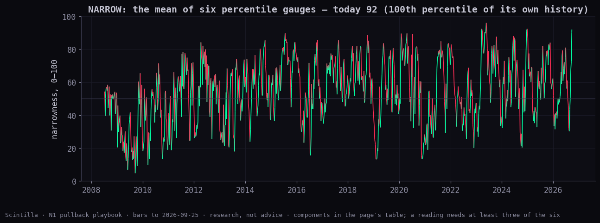
| NARROW decile | range | SPY +63 | SPY +126 | RSP − SPY, 63 | RSP − SPY, 126 | leaders − SPY, 126 | SPY worst within 63 |
|---|---|---|---|---|---|---|---|
| 1 | 5–27 | +5.5 | +9.1 | +1.1 | +1.8 | -1.0 | -2.5 |
| 2 | 27–38 | +3.9 | +7.8 | +0.4 | +0.6 | -0.8 | -2.6 |
| 3 | 38–45 | +4.0 | +7.3 | -0.5 | -0.9 | -0.1 | -3.5 |
| 4 | 45–50 | +3.9 | +5.9 | -0.4 | -0.2 | -1.0 | -3.4 |
| 5 | 50–55 | +2.9 | +5.8 | -0.3 | -0.8 | 0.0 | -3.2 |
| 6 | 55–61 | +2.6 | +6.5 | -0.4 | -0.7 | -0.4 | -3.4 |
| 7 | 61–66 | +3.2 | +7.0 | -0.3 | -0.7 | -0.6 | -3.1 |
| 8 | 66–72 | +4.7 | +8.2 | -0.5 | -0.9 | +0.5 | -1.9 |
| 9 | 72–79 | +4.0 | +6.7 | -0.4 | -0.7 | +0.7 | -2.8 |
| 10 | 79–96 | +3.9 | +6.3 | +0.1 | -0.8 | +0.6 | -4.2 |
Narrowest tenth against all days (57 separate starts): SPY +126 +1.19 (90% range -0.57 to +3.15; not shown); RSP − SPY over 126 +0.10 (90% range -0.77 to +0.97; not shown); leaders − SPY over 126 -0.25 (90% range -1.05 to +0.60; not shown); SPY's worst within 63 +0.69 (90% range -0.55 to +1.93; not shown). None of the six survive the false-discovery check: the gauge describes the regime, it does not forecast the index. Its consistent message across deciles is that equal weight kept trailing after narrow readings — the same persistence the sector-rotation study found at multi-year spans.
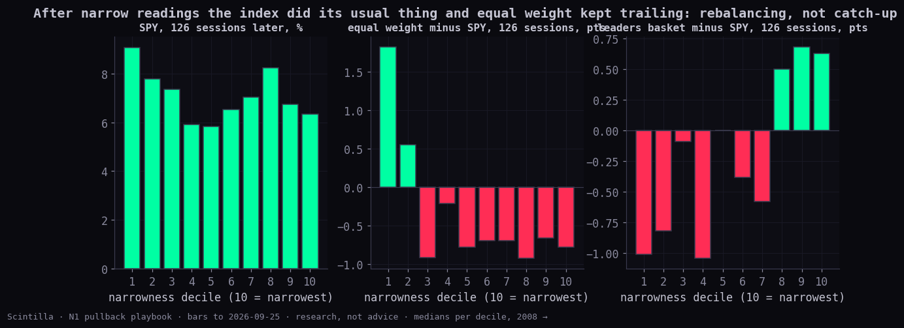
| pair (equal ÷ cap) | level percentile, all history | 1-year change | stretch vs its 1-year mean | past extremes | cap-weight fund +63 after them | cap fund +252 | equal ÷ cap +63 (rebalancing) | equal ÷ cap +252 |
|---|---|---|---|---|---|---|---|---|
| S&P 500 (RSP ÷ SPY) | 0th | -3.9 | -4.3 | 7 | +3.3 | +15.6 | +0.7 | -0.2 |
| Russell 1000 (EQAL ÷ IWB) | 0th | -3.1 | -5.6 | 4 | +6.3 | +26.7 | +3.4 | -2.7 |
| Communication services (RSPC ÷ XLC) | 0th | -8.4 | -4.9 | 2 | +9.9 | +24.9 | -3.3 | -7.8 |
| Nasdaq-100 (Direxion) (QQQE ÷ QQQ) | 1st | -3.8 | -2.7 | 6 | -0.2 | +13.2 | +1.5 | -4.4 |
| Nasdaq-100 (First Trust) (QQEW ÷ QQQ) | 2nd | -6.3 | -0.1 | 9 | +0.1 | +18.9 | +2.5 | -4.2 |
| Consumer discretionary (RSPD ÷ XLY) | 4th | -2.0 | -1.8 | 7 | -5.5 | +5.9 | +2.3 | +9.4 |
| Consumer staples (RSPS ÷ XLP) | 5th | -4.4 | -2.1 | 5 | +3.1 | +9.0 | +0.1 | -7.1 |
Statistician-2's reading stands: after past extremes of the S&P pair (10 entries at the 5th percentile) SPY rose a median +10.3% in six months, the leaders basket +9.1%, and equal weight's catch-up over the same span was -1.1 points (up 33% of the time). Over the past year SPY is +16.7%, RSP +12.1%, the leaders basket +9.4%, and the median served stock +7.0% (60% of them up). Top-10 contribution share (leaders study): 2020 70%, 2021 42%, 2023 70%, 2024 67%, 2025 61%, 2026 66% so far.
/allocation should read NARROW (not built)The fan. The Lab's EMA/SMA Fan (Pine v19, the "Lengths" group) has thirteen lines: EMA 2, 3, 5, 8, 13, 21, 34, 50; SMA 50, 100, 150, 200 daily; and the 200-week SMA. Alan's memory of 13 is right. The Station's nested clouds draw four of them (e13, e21, s50, s200) and the Geiger reads nine. Here every line is computed from daily closes (the weekly one from completed weeks) and a level for day i is the line's value at the close of day i−1, exactly as the Pine reads the previous completed bar.
The design. A campaign opens at the first close a stated depth below the 252-session high (one per pullback; the next needs a new high). Money = 1, spread over 60 sessions. single: all the money at the trigger close. dca: five equal parts at the trigger close and every 12 sessions after. fan: the trigger tranche plus one limit at every fan line below the trigger close (each line's value that day, known at the open); equal parts. pivots: the trigger tranche plus the last three swing lows below, the rising diagonal through the last two swing lows, and its lower parallel; equal parts. rsi: the trigger tranche plus one part at the first close whose RSI own-percentile is at or under 20, 10, 5, 2, 1. all: fan + pivots + RSI (10, 5, 1) together, equal parts. state: the fan ladder, with the trigger tranche's share raised by the VIX's own percentile at the trigger (100th → half the money at once). a price rung fills at min(open, level) on the first day the low touches the level; a close-based rung fills at that close; whatever is unfilled after 60 sessions is bought at that close, so every strategy ends fully invested and is compared on the same money; the next campaign needs a new 252-session high first. Outcomes: average cost against the trigger close; return on cost at 63, 126 and 252 sessions; the worst mark-to-cost within 126 sessions (the pain); time in market (average share of the money deployed over the window); the share left unfilled and bought at the window's close; and, separately, the cost and return of the money that did reach a level.
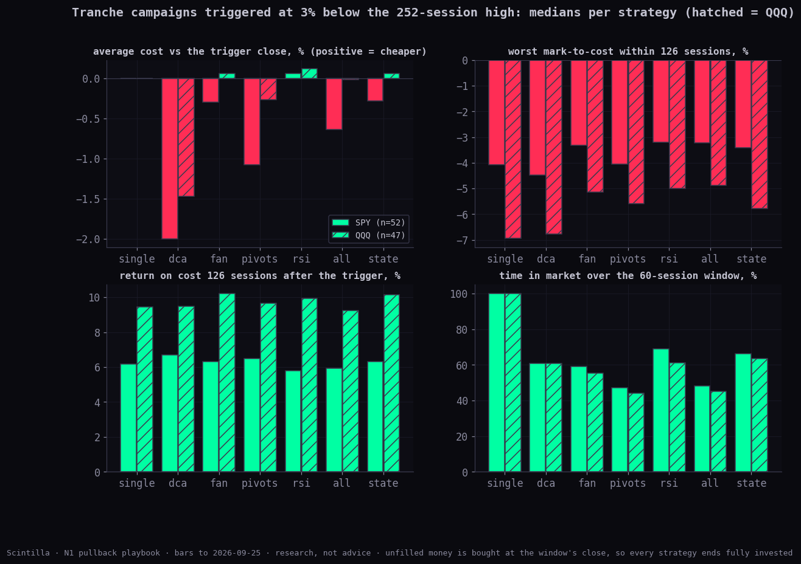
| strategy | rungs | cost vs trigger | money that reached a level | its cost vs trigger | its return +126 | return +63 | +126 | +252 | worst mark-to-cost (126) | time in market | forced at the end | vs single: worst | vs single: +126 | vs single: +252 |
|---|---|---|---|---|---|---|---|---|---|---|---|---|---|---|
| single | 1 | 0.00 | 100% | 0.00 | +6.2 | +2.8 | +6.2 | +10.0 | -4.1 | 100% | 0% | — | — | — |
| dca | 5 | -2.00 | 100% | -2.00 | +6.7 | +2.3 | +6.7 | +9.1 | -4.5 | 61% | 0% | +0.14 (90% range -0.27 to +0.53; not shown) | -0.73 (90% range -1.57 to +0.19; not shown) | -0.53 (90% range -1.46 to +0.62; not shown) |
| fan | 5 | -0.30 | 71% | +0.81 | +9.5 | +2.6 | +6.3 | +9.7 | -3.3 | 59% | 29% | +0.74 (90% range +0.41 to +1.02; luck-proof) | -0.65 (90% range -1.38 to +0.10; not shown) | -0.53 (90% range -1.40 to +0.34; not shown) |
| pivots | 4 | -1.08 | 50% | +0.76 | +9.5 | +1.9 | +6.5 | +9.4 | -4.0 | 47% | 50% | +0.68 (90% range +0.23 to +1.16; leaning) | -0.94 (90% range -1.84 to -0.03; leaning) | -0.92 (90% range -1.98 to +0.18; not shown) |
| rsi | 6 | +0.06 | 83% | +0.66 | +7.0 | +2.4 | +5.8 | +9.4 | -3.2 | 69% | 17% | +0.65 (90% range +0.37 to +0.91; luck-proof) | -0.64 (90% range -1.32 to +0.01; not shown) | -0.66 (90% range -1.48 to +0.04; not shown) |
| all | 11 | -0.64 | 58% | +1.21 | +8.2 | +2.1 | +5.9 | +9.2 | -3.2 | 48% | 42% | +0.86 (90% range +0.48 to +1.22; luck-proof) | -0.88 (90% range -1.72 to -0.04; leaning) | -0.83 (90% range -1.80 to +0.18; not shown) |
| state | 5 | -0.28 | 75% | +0.66 | +8.6 | +2.7 | +6.3 | +10.5 | -3.4 | 66% | 25% | +0.64 (90% range +0.38 to +0.86; luck-proof) | -0.55 (90% range -1.14 to +0.09; not shown) | -0.46 (90% range -1.17 to +0.25; not shown) |
180 comparisons against single entry across 6 trigger depths; 22 survive the false-discovery check. Medians shown; "vs single" is the mean paired difference with its 90% range. By state at the trigger: above 200-day n 52: fan +126 +6.3 vs single +6.2, worst -3.3 vs -4.1 — a 3% trigger almost always fires while price is still above the 200-day, so the "below a falling 200-day" state (the 1-in-10 hard falls) is not reached by this design and needs a deeper trigger (the 7% and 10% rows in the JSON).
| strategy | rungs | cost vs trigger | money that reached a level | its cost vs trigger | its return +126 | return +63 | +126 | +252 | worst mark-to-cost (126) | time in market | forced at the end | vs single: worst | vs single: +126 | vs single: +252 |
|---|---|---|---|---|---|---|---|---|---|---|---|---|---|---|
| single | 1 | 0.00 | 100% | 0.00 | +9.4 | +4.1 | +9.4 | +16.8 | -6.9 | 100% | 0% | — | — | — |
| dca | 5 | -1.47 | 100% | -1.47 | +9.5 | +2.8 | +9.5 | +16.0 | -6.8 | 61% | 0% | -0.19 (90% range -0.76 to +0.35; not shown) | -1.33 (90% range -2.48 to -0.25; luck-proof) | -1.36 (90% range -2.68 to -0.22; leaning) |
| fan | 7 | +0.06 | 67% | +1.05 | +11.5 | +3.0 | +10.2 | +17.4 | -5.2 | 56% | 33% | +0.48 (90% range -0.05 to +0.94; not shown) | -1.23 (90% range -2.49 to -0.08; leaning) | -1.37 (90% range -2.85 to -0.20; leaning) |
| pivots | 4 | -0.27 | 50% | +0.88 | +12.6 | +1.9 | +9.7 | +15.9 | -5.6 | 44% | 50% | +0.67 (90% range -0.02 to +1.26; not shown) | -1.12 (90% range -2.69 to +0.19; not shown) | -1.25 (90% range -3.00 to +0.12; not shown) |
| rsi | 6 | +0.12 | 67% | +1.02 | +11.9 | +3.3 | +9.9 | +17.6 | -5.0 | 61% | 33% | +0.81 (90% range +0.27 to +1.31; luck-proof) | -0.83 (90% range -2.06 to +0.28; not shown) | -1.00 (90% range -2.42 to +0.14; not shown) |
| all | 14 | -0.02 | 53% | +1.62 | +12.3 | +2.5 | +9.2 | +15.1 | -4.9 | 45% | 47% | +0.80 (90% range +0.15 to +1.34; leaning) | -1.24 (90% range -2.77 to +0.04; not shown) | -1.41 (90% range -3.13 to -0.04; leaning) |
| state | 7 | +0.06 | 75% | +0.75 | +11.3 | +3.5 | +10.1 | +17.7 | -5.8 | 64% | 25% | +0.42 (90% range +0.04 to +0.77; leaning) | -0.90 (90% range -1.80 to -0.03; leaning) | -1.00 (90% range -2.11 to -0.09; leaning) |
180 comparisons against single entry across 6 trigger depths; 73 survive the false-discovery check. Medians shown; "vs single" is the mean paired difference with its 90% range. By state at the trigger: above 200-day n 47: fan +126 +10.2 vs single +9.4, worst -5.2 vs -6.9 — a 3% trigger almost always fires while price is still above the 200-day, so the "below a falling 200-day" state (the 1-in-10 hard falls) is not reached by this design and needs a deeper trigger (the 7% and 10% rows in the JSON).
| strategy | rungs | cost vs trigger | money that reached a level | its cost vs trigger | its return +126 | return +63 | +126 | +252 | worst mark-to-cost (126) | time in market | forced at the end | vs single: worst | vs single: +126 | vs single: +252 |
|---|---|---|---|---|---|---|---|---|---|---|---|---|---|---|
| single | 1 | 0.00 | 100% | 0.00 | +6.1 | +2.8 | +6.1 | +11.1 | -4.0 | 100% | 0% | — | — | — |
| dca | 5 | -1.12 | 100% | -1.12 | +6.0 | +2.3 | +6.0 | +10.6 | -4.3 | 61% | 0% | +0.19 (90% range -0.29 to +0.72; not shown) | -0.76 (90% range -1.74 to +0.31; not shown) | -0.70 (90% range -1.76 to +0.33; not shown) |
| fan | 5 | +0.40 | 75% | +1.34 | +7.4 | +2.4 | +7.2 | +10.9 | -3.3 | 59% | 25% | +1.02 (90% range +0.56 to +1.51; luck-proof) | -0.58 (90% range -1.77 to +0.73; not shown) | -0.54 (90% range -1.87 to +0.74; not shown) |
| pivots | 4 | -0.81 | 50% | +0.24 | +8.3 | +1.9 | +6.7 | +9.9 | -4.1 | 31% | 50% | +0.80 (90% range +0.08 to +1.52; leaning) | -1.12 (90% range -2.56 to +0.33; not shown) | -1.15 (90% range -2.67 to +0.44; not shown) |
| rsi | 6 | +0.35 | 83% | +0.87 | +7.3 | +2.7 | +7.0 | +12.1 | -3.0 | 67% | 17% | +0.91 (90% range +0.51 to +1.28; luck-proof) | -0.23 (90% range -1.01 to +0.62; not shown) | -0.23 (90% range -1.14 to +0.67; not shown) |
| all | 11 | +0.03 | 58% | +1.66 | +8.0 | +2.0 | +7.3 | +10.6 | -2.8 | 48% | 42% | +1.21 (90% range +0.56 to +1.84; luck-proof) | -0.77 (90% range -2.13 to +0.65; not shown) | -0.76 (90% range -2.23 to +0.66; not shown) |
| state | 5 | +0.35 | 77% | +1.08 | +7.4 | +3.2 | +7.0 | +11.2 | -3.1 | 67% | 24% | +0.94 (90% range +0.60 to +1.31; luck-proof) | -0.39 (90% range -1.30 to +0.65; not shown) | -0.37 (90% range -1.45 to +0.65; not shown) |
180 comparisons against single entry across 6 trigger depths; 24 survive the false-discovery check. Medians shown; "vs single" is the mean paired difference with its 90% range. By state at the trigger: above 200-day n 38: fan +126 +7.5 vs single +6.7, worst -3.1 vs -4.0; below 200-day n 1: fan +126 +1.9 vs single -3.7, worst -9.2 vs -10.4 — a 3% trigger almost always fires while price is still above the 200-day, so the "below a falling 200-day" state (the 1-in-10 hard falls) is not reached by this design and needs a deeper trigger (the 7% and 10% rows in the JSON).
| strategy | rungs | cost vs trigger | money that reached a level | its cost vs trigger | its return +126 | return +63 | +126 | +252 | worst mark-to-cost (126) | time in market | forced at the end | vs single: worst | vs single: +126 | vs single: +252 |
|---|---|---|---|---|---|---|---|---|---|---|---|---|---|---|
| single | 1 | 0.00 | 100% | 0.00 | +8.4 | +4.3 | +8.4 | +16.6 | -6.3 | 100% | 0% | — | — | — |
| dca | 5 | -1.96 | 100% | -1.96 | +6.8 | +2.6 | +6.8 | +15.4 | -6.6 | 61% | 0% | -0.27 (90% range -0.73 to +0.24; not shown) | -1.81 (90% range -2.76 to -0.72; luck-proof) | -2.16 (90% range -3.28 to -1.17; luck-proof) |
| fan | 8 | -0.73 | 63% | +1.10 | +9.8 | +2.9 | +7.1 | +15.4 | -5.8 | 53% | 38% | +0.33 (90% range -0.14 to +0.79; not shown) | -2.04 (90% range -2.94 to -1.12; luck-proof) | -2.49 (90% range -3.56 to -1.64; luck-proof) |
| pivots | 4 | -2.16 | 50% | +0.42 | +10.3 | +1.8 | +5.9 | +16.1 | -6.1 | 39% | 50% | +0.19 (90% range -0.39 to +0.80; not shown) | -2.57 (90% range -3.86 to -1.33; luck-proof) | -3.08 (90% range -4.38 to -1.91; luck-proof) |
| rsi | 6 | -1.08 | 50% | +1.29 | +10.8 | +2.3 | +7.0 | +15.5 | -6.2 | 37% | 50% | +0.37 (90% range -0.25 to +1.00; not shown) | -2.67 (90% range -3.90 to -1.44; luck-proof) | -3.18 (90% range -4.52 to -2.12; luck-proof) |
| all | 15 | -1.53 | 47% | +1.53 | +10.7 | +2.1 | +6.8 | +15.8 | -5.6 | 37% | 53% | +0.49 (90% range -0.07 to +1.14; not shown) | -2.64 (90% range -3.79 to -1.47; luck-proof) | -3.17 (90% range -4.47 to -2.07; luck-proof) |
| state | 8 | -0.67 | 74% | +0.84 | +9.8 | +2.9 | +6.6 | +16.5 | -5.8 | 61% | 26% | +0.35 (90% range +0.01 to +0.68; leaning) | -1.49 (90% range -2.14 to -0.81; luck-proof) | -1.77 (90% range -2.52 to -1.14; luck-proof) |
180 comparisons against single entry across 6 trigger depths; 133 survive the false-discovery check. Medians shown; "vs single" is the mean paired difference with its 90% range. By state at the trigger: above 200-day n 138: fan +126 +7.1 vs single +8.4, worst -5.8 vs -6.3 — a 3% trigger almost always fires while price is still above the 200-day, so the "below a falling 200-day" state (the 1-in-10 hard falls) is not reached by this design and needs a deeper trigger (the 7% and 10% rows in the JSON).
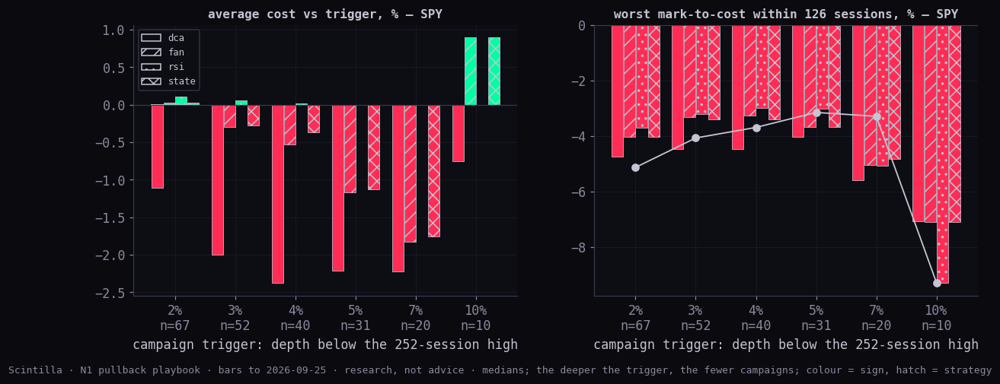
What the back-test says. (1) Levels buy cheaper when they come: the money that reached a fan line, a pivot or an RSI rung was bought +0.8% to +1.2% under the trigger on SPY, and its six-month return was +9.5% to +8.2% against +6.2% for the trigger buy. (2) Levels often never come: 29% (fan) to 50% (pivots) of the money was still waiting at 60 sessions and bought at that day's close, usually higher. That is the whole cost of the ladders, and on the Nasdaq-100's 138 campaigns since 1985 it is luck-proof: -2.0 points at six months for the fan, -2.7 for the RSI ladder. (3) The pain benefit is real and luck-proof on SPY and the leaders: worst mark-to-cost improves by +0.7 (fan) to +0.9 (all) points, and only 48% to 69% of the money sits in the market over the window. (4) Time DCA is the worst of both: no cheaper cost (-2.0%), no pain benefit, and the return cost. (5) The state-sized ladder (front tranche grows with the VIX percentile) kept the pain benefit (+0.6) with the smallest return cost among the ladders on the Nasdaq-100 (-1.5), and returned +10.5% at a year on SPY against +10.0% for single entry.
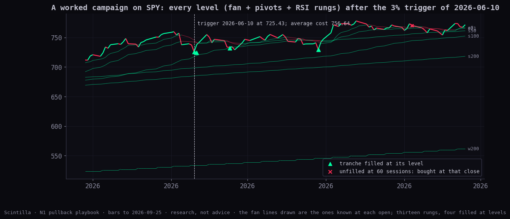
The worked example (2026-06-10, trigger 725.43, average cost 756.64) is the honest picture of a shallow pullback: 4 of 13 rungs filled at their levels (trigger 725.43, e50 724.42, s50 732.03, rsi≤p10 729.46); the rest waited for lows that did not come while the index recovered.
On the calendar. Core PCE Price Index MoM (Aug) (estimate 0.3, previous 0.2); Core PCE Price Index YoY (Aug) (estimate 3.4, previous 3.3); Core PCE Prices QoQ (Q2) (estimate 3.6, previous 4.4); PCE Price Index MoM (Aug) (estimate 0.4, previous 0.2); PCE Price Index YoY (Aug) (estimate 3.7, previous 3.7); PCE Prices QoQ (Q2) (estimate 5.3, previous 4.6); Personal Income MoM (Aug) (estimate 0.4, previous 0.4) — all at 12:30 UTC (08:30 ET) on Wednesday 30 September, from the Hub's economic calendar. MU's call dates on file run quarterly (2024-09-25, 2024-12-18, 2025-03-20, 2025-06-25, 2025-09-23, 2025-12-17, 2026-03-18, 2026-06-24); Alan's note puts this quarter's report on Wednesday after the close.
| PCE release day | SPY move that day | day's range | SPY depth the day before | in a ≥3% pullback | the week (5 sessions) |
|---|---|---|---|---|---|
| 2024-06-28 | -0.39 | 1.34 | -0.39 | +1.51 | |
| 2024-07-26 | +1.12 | 1.06 | -4.68 | yes | +0.85 |
| 2024-08-30 | +0.95 | 1.26 | -1.15 | -3.22 | |
| 2024-09-27 | -0.15 | 0.66 | 0.00 | -0.78 | |
| 2024-10-31 | -1.96 | 1.24 | -0.78 | +1.90 | |
| 2024-11-27 | -0.30 | 0.59 | 0.00 | +1.17 | |
| 2024-12-20 | +0.86 | 2.53 | -3.57 | yes | +1.52 |
| 2025-01-31 | -0.53 | 1.47 | -0.77 | +0.21 | |
| 2025-02-28 | +1.56 | 2.10 | -4.55 | yes | -2.11 |
| 2025-03-28 | -2.01 | 1.97 | -7.48 | yes | -5.36 |
| 2025-04-30 | +0.04 | 2.71 | -9.56 | yes | +0.81 |
| 2025-05-30 | -0.11 | 1.34 | -3.73 | yes | +0.51 |
| 2025-06-27 | +0.50 | 0.91 | -0.17 | +2.20 | |
| 2025-07-31 | -0.38 | 1.43 | -0.41 | -0.26 | |
| 2025-08-29 | -0.60 | 0.72 | 0.00 | -0.26 | |
| 2025-09-26 | +0.57 | 0.68 | -1.32 | +1.70 | |
| 2025-12-05 | +0.19 | 0.56 | -0.44 | +0.70 | |
| 2025-12-23 | +0.46 | 0.63 | -0.63 | +0.32 | |
| 2026-01-22 | +0.52 | 0.61 | -1.40 | +1.46 | |
| 2026-02-20 | +0.72 | 1.22 | -1.58 | +0.70 | |
| 2026-03-13 | -0.57 | 1.65 | -4.23 | yes | -0.94 |
| 2026-04-09 | +0.58 | 1.09 | -2.80 | +3.54 | |
| 2026-04-30 | +0.99 | 1.31 | -0.50 | +3.13 | |
| 2026-05-28 | +0.55 | 0.79 | -0.02 | +0.50 | |
| 2026-06-25 | +0.14 | 1.33 | -3.47 | yes | +1.71 |
| 2026-07-30 | +1.68 | 1.08 | -3.96 | yes | +5.53 |
| 2026-08-26 | +0.02 | 0.45 | -1.54 | -0.54 |
27 releases on file (2024-06-28 →). SPY's absolute move on PCE days averaged 0.68% against 0.66% on all days of the last three years; up 63% of the time. The 9 releases that landed inside a 3%-or-deeper pullback: 2024-07-26 (-4.7% down before): day +1.12%, week +0.85%; 2024-12-20 (-3.6% down before): day +0.86%, week +1.52%; 2025-02-28 (-4.5% down before): day +1.56%, week -2.11%; 2025-03-28 (-7.5% down before): day -2.01%, week -5.36%; 2025-04-30 (-9.6% down before): day +0.04%, week +0.81%; 2025-05-30 (-3.7% down before): day -0.11%, week +0.51%; 2026-03-13 (-4.2% down before): day -0.57%, week -0.94%; 2026-06-25 (-3.5% down before): day +0.14%, week +1.71%; 2026-07-30 (-4.0% down before): day +1.68%, week +5.53%. the Hub's economic calendar begins in June 2024, so only these releases are on file; older PCE days are not inferred.
| MU reaction day | how the date is known | MU | SMH | SPY | SPY depth the day before | in a ≥3% pullback | SPY next 5 |
|---|---|---|---|---|---|---|---|
| 2020-06-30 | inferred (volume ×2.1) | +4.83 | +2.43 | +1.28 | -10.01 | yes | +2.54 |
| 2020-09-30 | inferred (volume ×2.9) | -7.39 | -0.15 | +0.76 | -7.08 | yes | +1.75 |
| 2021-01-08 | inferred (volume ×3.2) | -2.14 | -0.36 | +0.57 | 0.00 | -1.46 | |
| 2021-07-01 | inferred (volume ×2.9) | -5.73 | -1.48 | +0.55 | 0.00 | +1.18 | |
| 2021-09-29 | inferred (volume ×2.4) | -2.00 | -1.51 | +0.17 | -4.30 | yes | +0.10 |
| 2021-12-21 | inferred (volume ×2.7) | +10.54 | +3.61 | +1.78 | -3.35 | yes | +3.11 |
| 2022-03-30 | inferred (volume ×2.8) | -3.52 | -2.90 | -0.62 | -3.38 | yes | -2.66 |
| 2022-07-01 | inferred (volume ×2.4) | -2.95 | -3.80 | +1.06 | -21.03 | yes | +0.78 |
| 2022-09-30 | inferred (volume ×2.1) | +0.18 | -1.48 | -1.55 | -24.06 | yes | +1.57 |
| 2022-12-22 | inferred (volume ×2.7) | -3.44 | -4.15 | -1.43 | -19.15 | yes | +0.45 |
| 2023-03-29 | inferred (volume ×3.4) | +7.19 | +3.11 | +1.45 | -14.29 | yes | +1.56 |
| 2023-06-29 | inferred (volume ×3.1) | -4.09 | -0.15 | +0.39 | -1.40 | +0.10 | |
| 2023-09-28 | inferred (volume ×3.6) | -4.41 | +1.62 | +0.58 | -6.93 | yes | -0.94 |
| 2023-12-21 | inferred (volume ×4.1) | +8.63 | +2.47 | +0.95 | -1.39 | +0.55 | |
| 2024-03-21 | inferred (volume ×4.8) | +14.13 | +2.27 | +0.33 | 0.00 | +0.17 | |
| 2024-06-27 | inferred (volume ×3.1) | -7.12 | -0.79 | +0.16 | -0.54 | +1.51 | |
| 2024-09-26 | call 2024-09-25 | +14.73 | +2.88 | +0.40 | -0.22 | -0.78 | |
| 2024-12-19 | call 2024-12-18 | -16.18 | -1.29 | -0.03 | -3.54 | yes | +1.52 |
| 2025-03-21 | call 2025-03-20 | -8.04 | -1.00 | -0.27 | -7.74 | yes | -1.48 |
| 2025-06-26 | call 2025-06-25 | -0.98 | +0.73 | +0.78 | -0.95 | +2.20 | |
| 2025-09-24 | call 2025-09-23 | -2.82 | -0.18 | -0.32 | -0.54 | +1.11 | |
| 2025-12-18 | call 2025-12-17 | +10.21 | +2.36 | +0.76 | -2.58 | +2.05 | |
| 2026-03-19 | call 2026-03-18 | -3.78 | +0.32 | -0.25 | -4.90 | yes | -2.23 |
| 2026-06-25 | call 2026-06-24 | +15.74 | +2.90 | +0.14 | -3.47 | yes | +1.43 |
All 71 reaction days (8 dated calls, 63 inferred from volume): MU's absolute move 7.1%, up 44% of the time; SMH median +0.39%; SPY median +0.20%, next five sessions +0.45%. When SPY was already 3% or more off its high (n 34): MU 7.4% absolute, up 38%; SPY +0.37%, next five +0.33%. When it was not (n 37): MU up 49%; SPY +0.20%, next five +0.55%. MU reports after the close; the reaction day is the next session. Eight call dates come from the Hub's transcripts table; earlier report days are INFERRED as the highest-volume day (≥ 2× its prior month) inside each quarterly reporting window, and are marked so.
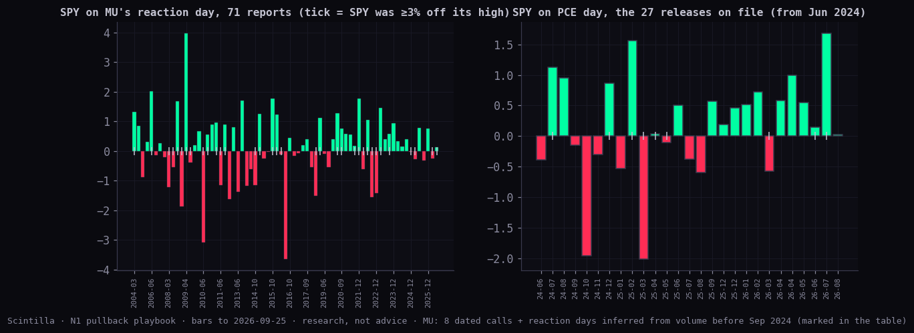
| series | source | from | to | bars |
|---|---|---|---|---|
| SPY | chart API cache daily-bars-rsi/SPY.json | 2003-09-11 | 2026-09-25 | 5797 |
| QQQ | chart API cache daily-bars-rsi/QQQ.json | 2011-03-23 | 2026-09-25 | 3901 |
| IWM | chart API cache daily-bars-rsi/IWM.json | 2003-09-11 | 2026-09-25 | 5797 |
| RSP | chart API cache sector-rotation-20260928/RSP.json | 2003-09-11 | 2026-09-25 | 5797 |
| VIX | chart API cache daily-bars-rsi/VIX.json | 1990-01-02 | 2026-09-25 | 9274 |
| PCC | chart API cache daily-bars-s9/PCC.json | 2006-11-01 | 2026-09-25 | 5005 |
| ^GSPC | FMP index history pulled inside Fly (daily-bars-rsi/fmp-indexes.json · ^GSPC) | 1927-12-30 | 2026-09-25 | 24791 |
| ^NDX | FMP index history pulled inside Fly (daily-bars-rsi/fmp-indexes.json · ^NDX) | 1985-01-31 | 2026-09-25 | 10493 |
| ^VIX3M | FMP EOD pulled inside Fly (regime-20260928/fmp-eod*.json · ^VIX3M) | 2006-07-17 | 2026-09-25 | 5081 |
| LEADERS | equal-weight basket of each year's top-20 S&P names by market cap on 1 Jan (FMP caps, leaders lane), members rebalanced each calendar year; closes from the chart API cache | 2007-01-03 | 2026-09-25 | 4964 |
| MU | chart API cache candles-f5/MU.json | 2003-09-11 | 2026-09-25 | 5797 |
| XLK | chart API cache sector-rotation-20260928/XLK.json | 2003-09-11 | 2026-09-25 | 5797 |
| XLU | chart API cache sector-rotation-20260928/XLU.json | 2003-09-11 | 2026-09-25 | 5797 |
| DIA | chart API cache daily-bars-rsi/DIA.json | 2003-09-11 | 2026-09-25 | 5797 |
| MDY | chart API cache candles-f5/MDY.json | 2003-09-11 | 2026-09-25 | 5797 |
| VTI | chart API cache candles-f5/VTI.json | 2003-09-11 | 2026-09-25 | 5797 |
| QQQE | chart API cache candles-f5/QQQE.json | 2012-03-21 | 2026-09-25 | 3582 |
| SMH | chart API cache candles-f5/SMH.json | 2003-09-11 | 2026-09-25 | 5797 |
Plus 316 more served names for breadth (the candles-f5 cache). Public tables read the way the Hub page reads them, copied into research/statistics/data/pullback-playbook-20260928/: sigma_day_counts (5776 sessions), econ_calendar (PCE rows), earnings_call_transcripts (MU call dates). Live quotes: the chart API's /quote and /macro at 17:49 UTC. Cited studies: sector-rotation (the bow tie and its wing history), statistician-2 (the seven pairs, put/call frames, the yields-up regime), leaders (top-10 shares, the leaders basket definition), regime (VIX ÷ 3-month VIX), bottoms (the pullback list this page's analogs were checked against).
node research/statistics/pullback-playbook/run.mjs after the bars update refreshes every number and chart (charts.py, page.mjs).Files: research/statistics/pullback-playbook/{lib,run,page}.mjs, charts.py; tests/pullback-playbook.test.mjs; this page, data/pullback-playbook.json, charts/*.png.